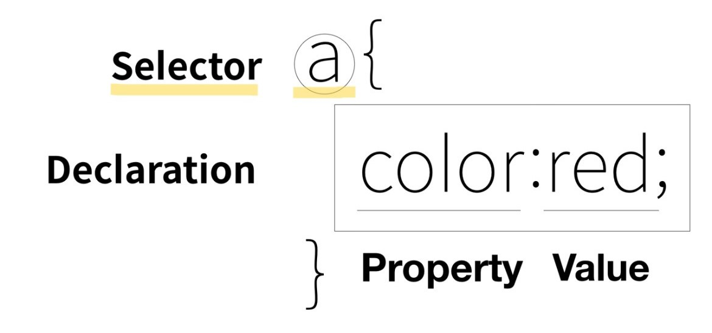

w3schools: CSS * Selector

선택자 Selector
- 위의 a 태그가 의미하는 바
이 웹 페이지의 모든 a라는 태그에게 어떠한 효과를 준다.
즉, "주고 싶은 효과를 누구에게 줄 것인가를 선택한다" 라는 점에서
저것을 선택자Selector라고 부릅니다.
선택자는
전체 선택자,
태그 선택자,
클래스 선택자,
아이디 선택자로 나뉘며,
두개의 대상을 동시에 바꾸고 싶을 때는
선택자 사이에 콤마를 추가하여 두 선택자 둘 다 css효과를 적용할 수 있다.
- 선택자의 영향력
전체 < 태그 < 클래스 < 아이디
선택자 id의 영향력이 제일 크며 선택자가 같다면 보다 아래에 위치한 선택자가
더 큰 영향력을 가지게 되며 그 선택자의 코드 명령을 듣게 됩니다.